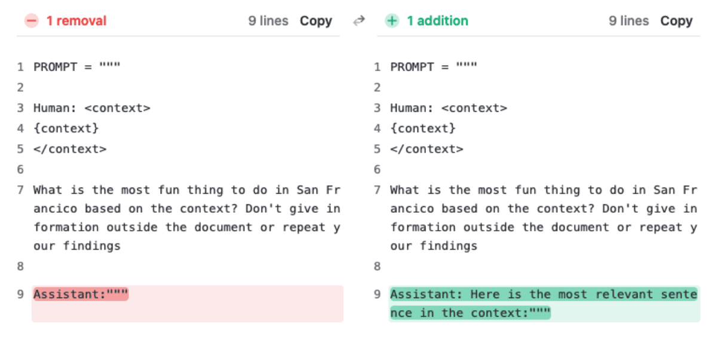

A perfect needle-in-a-haystack score means the model found one planted sentence
Gemini 1.5 clears the test through a million tokens, a benchmark that rewards copying an out-of-place fact and leaves long-context reasoning untested.
Why this matters
Every few months a lab announces a model that reads a million tokens, roughly a small shelf of books, with near-perfect recall. That claim almost always rests on one test: needle in a haystack. This lesson takes the test apart. You will see how its score is built, one planted sentence and one grid at a time, and how to read the grid that comes out. Then you will see why a near-perfect score on it settles less than it looks like it does: the test measures whether a model can find a fact, not whether it can use everything sitting around that fact. By the end you can meet any "perfect recall at N tokens" claim and say what it does and does not prove.
- 01
- The context window: the length a model advertises versus the length it can actually use.
One planted sentence in a stack of essays
The needle-in-a-haystack test begins with a sentence that does not belong. Greg Kamradt's 2023 version plants one line inside a long run of Paul Graham's startup essays and asks the model to return it, then grades each run the simplest way there is: did the reply come back with the planted fact, yes or no.1 The planted line is "The best thing to do in San Francisco is eat a sandwich and sit in Dolores Park on a sunny day," and the model is asked what the best thing to do in San Francisco is.2 The essays are the haystack. The sandwich sentence is the needle. The model may answer using only the text it was handed.
Give that skill its plain name and hold it: finding the planted fact. It is the whole of what one run tests. The model does not have to understand the essays, weigh them, or connect anything in them. It has to locate one out-of-place line and repeat it. Everything the score later gets read to mean is built on top of this one narrow act, so it is worth being exact about how small the act is.
A single run becomes a grid
A single question at a single spot is one data point. The test turns into a score by repeating that run across two axes. The needle slides down through the document, from the very top (0 percent depth) to the very bottom (100 percent), while the document itself grows from about a thousand tokens up to the model's advertised limit.1 Every pairing of depth and length is one graded run. The results are drawn as a grid, one cell per run, green where the model returned the fact and red where it missed.2 A model "passes" when the grid is green from corner to corner.
Those green grids now stretch a long way. Google's Gemini 1.5 Pro returns the single planted fact better than 99.7 percent of the time through a million tokens of text, a near-perfect score for copying back one sentence written to stand out from the essays around it.3 The same recall holds at 100 percent out to 530,000 tokens and at 99.2 percent out to ten million. It holds even when the haystack is audio or video instead of prose. A million tokens is roughly 750,000 words, several times the length of War and Peace. The grid says the model can find one sentence anywhere in that pile. A grid this green looks like a model that has taken in the whole book. Or has it only found the one line that was built not to fit?
A score a find-in-page could earn
Here is the second skill, the one the score gets confused for: using the whole document, meaning reading across everything in the context and doing something with it. Finding the planted fact is not that. It is closer to a find-in-page search. The needle and the question share words, "San Francisco" sits in both, so a model can reach the answer by matching text rather than following meaning.
NoLiMa, a 2025 benchmark, tests precisely that gap. It writes needles that share no literal words with the question, tied to it only by meaning.4 A needle might place a character next to a famous opera house while the question asks who is in that city, so the model has to supply the link itself, with no shared word to match on. Take away the shared words and the near-perfect scores come down with them. GPT-4o, which scores 99.3 percent on a short version of the task, drops to 69.7 percent at 32,000 tokens. Across thirteen models that advertise 128,000-token windows, eleven fall below half of their own short-context score by 32,000 tokens.4 You read a wall of green and assume the model has absorbed the document. The green certifies something narrower: the model can find a fact when the question all but spells out the words to look for.
When the task needs more than one fact
Real work with a long document rarely turns on one fact in isolation. It asks the model to gather several facts, keep their order, or notice what the middle of the text says. Each of those tasks steps past plain retrieval, and the scores give way. Lance Martin's multi-needle extension to Kamradt's own tool plants several needles at once. Asked to return ten planted ingredients from about 24,800 tokens, GPT-4 with a 128,000-token window comes back with four of them.5 The count keeps falling as the needles climb from one to ten and as the context grows. A reasoning step laid on top trails retrieval by a further margin: the model cannot reason over facts it did not manage to retrieve.5
NVIDIA's RULER benchmark keeps the needle idea and makes it harder, adding several needles, variables to trace through the text, and words to count, run across seventeen models and thirteen tasks.6 Nearly every model that looks perfect on the plain needle test degrades as the input lengthens. RULER fixes a model's effective context length as the longest input at which it still beats a small reference model, Llama-2-7B scoring 85.6 percent at 4,000 tokens. By that bar, of the models it ranks, only four hold their performance out to 32,000 tokens.6
| Model | Claimed | Effective |
|---|---|---|
| GPT-4 | 128K | 64K |
| Command-R | 128K | 32K |
| Yi-34B | 200K | 32K |
| Mixtral | 32K | 32K |
| ChatGLM | 128K | 4K |
| LWM | 1M | <4K |
The longest input a model still handles well, set at the point where it stops beating a small baseline. It usually lands far below the window the model advertises, which is why a claimed length and a usable length are two different numbers.6
Where the fact sits matters as much as how many there are. The context window lesson showed that the advertised length runs ahead of the length a model can use; the needle test hides part of the reason. In "Lost in the Middle," the same needed fact placed in the middle of a long input is answered less often than when it sits at the start or the end.7 In the worst case it is answered less often than giving the model no documents at all, below its own closed-book baseline. A needle the test slides neatly through every depth can paper over that dip, because the needle is written to be found.
The failure the test did catch
None of this makes the needle test worthless. It is cheap, quick, and it catches a real kind of failure. When Anthropic ran it on Claude 2.1 across a 200,000-token window, the model returned the planted San Francisco fact only 27 percent of the time.8 The window was not the trouble. Adding one line to the start of the model's own reply, "Here is the most relevant sentence in the context:", lifted the score to 98 percent, with the model and its context length untouched.8

The model could always reach the fact. By default it held back from answering off a single out-of-place sentence, and one line of instruction removed the reluctance.8 That is the fair case for the test. A green grid is a necessary condition for trusting a long window, not a sufficient one. A red grid, like Claude 2.1's first run, points at a genuine failure that a small fix can clear. A green grid rules that failure out and stays silent on the harder work that starts the moment more than one fact is in play.
The takeaway
The needle-in-a-haystack test scores one narrow skill: given a long text and a fact planted somewhere inside it, can the model find that fact and copy it back. A green grid answers yes, at every depth and length tried, and that is worth knowing. It caught Claude 2.1 answering only 27 percent of the time until one line of prompting fixed it. But finding a planted sentence is close to a find-in-page search, and it holds only while the task stays that simple. Ask for a fact with no shared words, or ten facts at once, or a fact buried in the middle, and the score comes down. So when a model is sold as reading a million tokens with near-perfect recall, read the claim precisely: it can pull one fact out of that length. Whether it can reason across the length is a separate question, and the needle test never asks it.
- 01
- Greg Kamradt, LLMTest_NeedleInAHaystack: the original tool, to run the sweep and read a grid yourself.
- 02
- RULER (Hsieh et al., 2024): the harder successor that measures how far a window really reaches.
Sources
- Greg Kamradt · LLMTest_NeedleInAHaystack (Needle In A Haystack)
- Arize AI · The Needle In A Haystack Test
- Google DeepMind · Gemini 1.5: Unlocking multimodal understanding across millions of tokens of context
- Modarressi et al. · NoLiMa: Long-Context Evaluation Beyond Literal Matching
- Lance Martin (LangChain) · Multi Needle in a Haystack
- Hsieh et al. (NVIDIA) · RULER: What's the Real Context Size of Your Long-Context Language Models?
- Liu et al. · Lost in the Middle: How Language Models Use Long Contexts
- Anthropic · Long context prompting for Claude 2.1